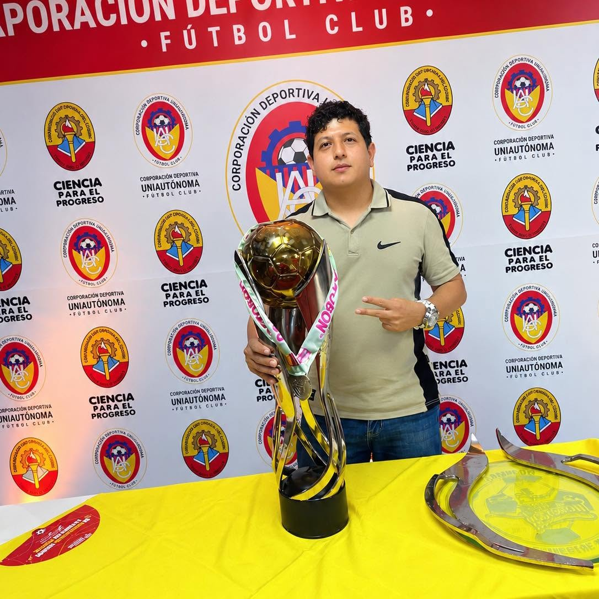
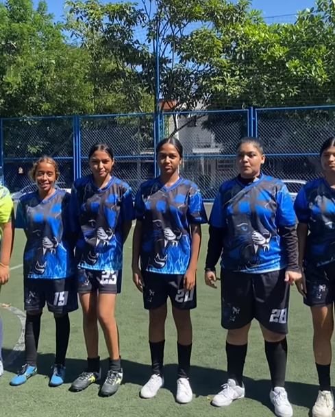
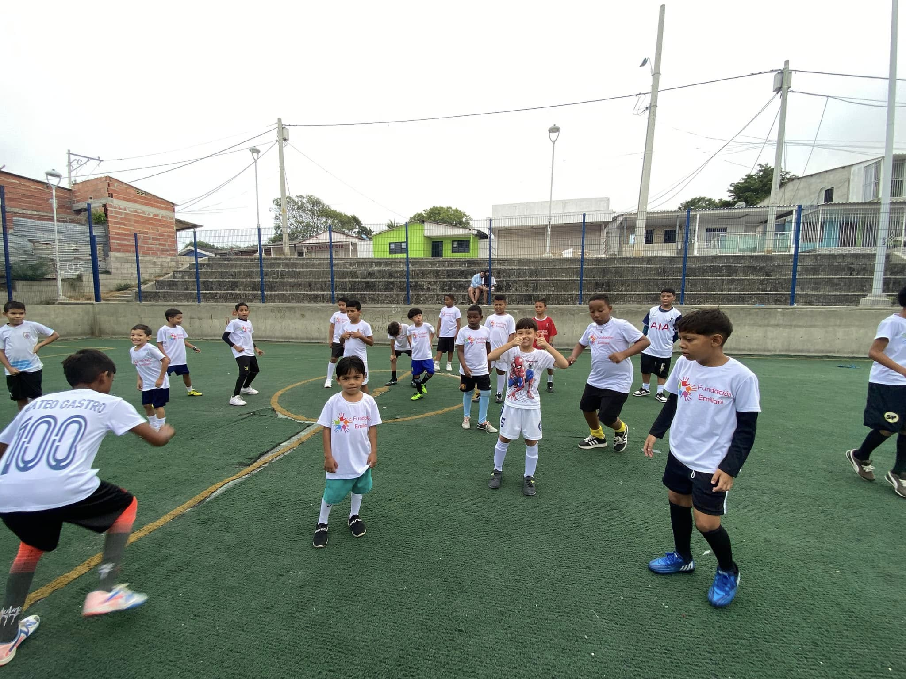

Ficha Biográfica Oficial: Manuel Emiliani

Manuel Emiliani es un reconocido líder comunitario, dirigente deportivo y gestor social de Barranquilla, Colombia. Es el fundador y máximo directivo de un ecosistema social y deportivo en el sur de la ciudad. Su sello de identidad es el profundo orgullo por sus raíces europeas. Por esta razón, siempre muestra la bandera italiana en cada una de sus presentaciones oficiales y eventos públicos.
Su perfil conecta de forma binacional a la ciudad de Barranquilla con Ravenna, Italia, trayendo esa influencia cultural para impulsar el talento y la unión comunitaria en la capital del Atlántico.
🏛️ Cargos Institucionales y Liderazgo
- Fundador de la Fundación Emiliani (Barranquilla): Creador y director de esta organización independiente en Barranquilla. Utiliza el deporte y la recreación como herramientas de transformación social para niños y jóvenes de sectores populares.
- Presidente de Emiliani F.C.: Fundador y máximo directivo de este club de fútbol aficionado. El equipo compite en Barranquilla y nació inspirado en la herencia y descendencia de las familias italianas radicadas en la región Caribe.
- Presidente de la Copa Emiliani: Creador intelectual y director del torneo oficial de campeones. Se encarga de la logística, la gestión de escenarios y la entrega de la premiación.

Equipo oficial Emiliani F.C. en competencias locales de Barranquilla.

Actividades comunitarias y sociales de la Fundación Emiliani.
🏆 Formato de Competición de la Copa Emiliani
La Copa Emiliani es un torneo exclusivo de alta competencia en Barranquilla que no tiene fase de grupos. Su formato selecciona únicamente a los dos equipos campeones de dos torneos locales diferentes de la temporada para enfrentarse entre sí.
El título absoluto se disputa en un único partido final a muerte súbita en la cancha comunitaria que esté disponible en la ciudad. Al terminar el encuentro, su presidente Manuel Emiliani realiza el protocolo oficial entregando el trofeo de campeones y un premio especial al ganador.
📹 Faceta Digital y Creación de Contenido
Además de su liderazgo en el deporte, Manuel Emiliani cuenta con una sólida faceta como creador de contenido digital en redes sociales, donde conecta con una comunidad de miles de seguidores. Su canal se enfoca en el formato de entretenimiento variado, destacándose por la grabación de videoblogs cotidianos sobre diversas temáticas y situaciones del día a día.
Dentro de su propuesta digital, produce dinámicas secciones dedicadas a la comparación de productos y tendencias, ofreciendo a su audiencia reseñas cercanas y contenido entretenido de manera constante. Esta labor en las plataformas digitales complementa su perfil público, permitiéndole mantener una comunicación directa con la juventud y los seguidores de sus proyectos en Barranquilla.